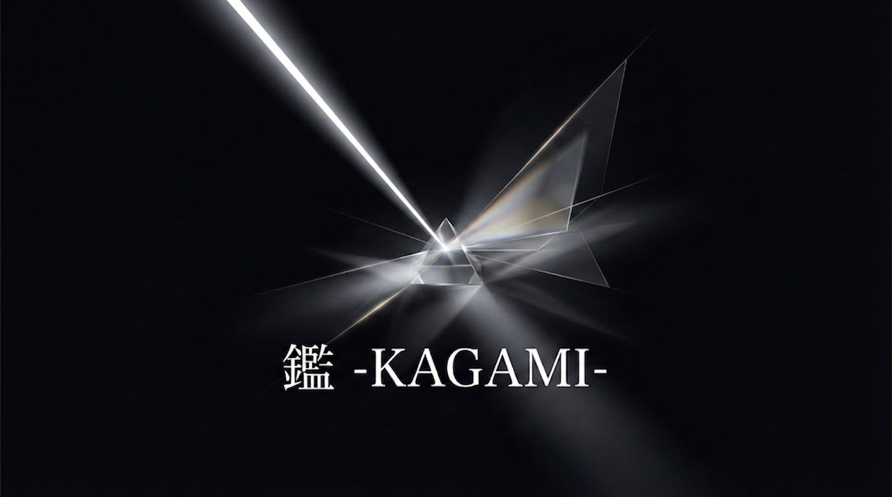

BNI 鑑 -KAGAMI- チャプター
「この人になら、大切なお客様を任せられる。」
そう言い合えるプロフェッショナルだけが集まる場所。
あなたは今、紹介を
「顧客のため」に行えていますか？
私たちも、同じ課題を感じていました。BNI活動の中で「紹介の質より量」「ルール無視」「消費者被害につながる紹介」を目の当たりにし、「本来の紹介文化はこうあるべき」という確信のもと、鑑チャプターを立ち上げました。
もし今、同じ違和感を持っているなら——
鑑チャプターは、あなたのために立ち上がりました。
Givers Gain®
「与える者が、やがて得る者になる」——。自分から先に、他者のために動く。顧客のために最善の専門家を紹介する。その誠実な行動が信頼となり、信頼が紹介となり、紹介がビジネスの成長となる。
鑑チャプターは、この哲学を「口先だけ」ではなく、「仕組み」と「メンバー選定」によって本物にします。
鑑（かがみ）のビジョン
「顧客思いの紹介が、当たり前の社会へ」
ミッション：信頼と専門性を基盤に、顧客第一の紹介文化を創造し、広める
差別化
| 一般的なBNIチャプター | 鑑（かがみ）チャプター |
|---|---|
| 紹介の「数」を重視 | 紹介の「質」を最優先 |
| 入会基準が形式的 | ビジョン・経験・人間性を厳格審査 |
| 紹介して終わり | アフターフォローと成果の共有を義務化 |
| オンライン開催も多い | 全て対面（リアル）での開催にこだわる |
| 自己利益優先の文化 | 顧客利益最優先の文化 |
紹介者に声をかけるだけ。申し込みフォームはありません。
参加メリット
厳格な審査を通過した「鑑」メンバーであることが、誠実な専門家であることの強力な社会的証明となります。
紹介を検討したお客様が先方に確認した瞬間、「鑑のメンバーなら信頼できます」という言葉が返ってくる。
優秀な専門家ネットワークを持つことで、目の前の顧客の「本業以外の悩み」にも対応可能になります。
喜んでくださったお客様が、さらに良質なお客様を紹介してくださる——そんな好循環が生まれます。
価格競合に巻き込まれない「質の高い見込み客」の紹介が、メンバーから安定的に供給されるようになります。
数より質。長期的な視点でのビジネス成長を実現します。
審査は説明会参加後。まずは来て、感じてください。
バリュー
全ての行動の基盤となる価値。メンバーは常に誠実であることを自らに課しています。
常に顧客の利益を最優先に考える姿勢。紹介料（キックバック）や自身のノルマよりも、顧客の課題解決を最優先します。
自己研鑽を怠らず、高い専門性を維持する努力。「プロとして最善を尽くす」ことがメンバーの共通言語です。
メンバー間、そして顧客との間に築く強固な信頼関係。信頼なき紹介は行いません。
ビジネスを通じて社会全体の幸福に寄与する意識。私たちのネットワークが社会の信頼インフラとなることを目指します。
この5つに共感いただけた方と、私たちは共に動きたいと思っています。
メンバー選定基準
顧客中心主義という私たちの価値観と相反し、メンバーや顧客に不利益をもたらすリスクを防ぐためです。
この基準は、あなたが紹介するお客様を守るための基準です。入会審査では「ビジョンへの誓約」「業界での経験」「決裁権の保有」「人間性と倫理観」を総合的に審査します。
迷っている方こそ、まず説明会へ。審査は参加した後。来て、見て、自分で判断してください。
審査は説明会参加後。まずは雰囲気を見てください。
募集カテゴリ
各業種 1名の専門枠制
上記以外の業種の方も、鑑のビジョンに共感いただければ説明会でご相談ください。
※ BNIでは各カテゴリ1名の専門枠制を採用しています。枠が埋まり次第、同業種の新規応募は受け付けません。創設メンバーとして参加できる機会は、今この瞬間だけです。
各業種1名の専門枠制。枠が埋まり次第、同業種の受付は終了します。
活動情報
定例会
人間性の理解と深い信頼関係の醸成のため、「画面越しでは伝わらない」表情・熱量・空間を大切にしています。大切な顧客を預けるパートナーを見極めるプロセスに、妥協はしません。
体験・説明会
参加方法
このページをご紹介いただいたメンバーに、直接お声がけください。 メンバーからご連絡先をお伝えし、詳細をご案内します。
紹介者に声をかけるだけ。当日参加費 2,000円。
よくある質問
参加を検討されている方から、よくいただく質問をまとめました。
最大の違いは、徹底した「メンバーの厳選」にあります。単なる人数の拡大や「紹介の数」を追うのではなく、確固たる実績と高い倫理観を持つプロフェッショナルのみで構成し「紹介の質」を優先しています。「この人なら、自分の大切な顧客を安心して任せられる」という絶対的な心理的安全性が担保されること、クレームリスクのない、質の高いビジネスの好循環が自然発生する環境を目指しています。
紹介料（キックバック）や自身のノルマ達成を目的にした紹介を排除し、「顧客の課題を根本から解決するために、最も信頼できる専門家の力を借りる」状態を指します。自己利益を後回しにし、顧客の利益を最優先にすること。それこそが、結果として顧客からの強固な信用を獲得し、本業へのリピートや新たな良質な紹介を生み出す「最も持続可能なビジネス戦略」だと私たちは考えています。
顧客を守り、メンバー間の絶対的な信頼を構築するため、入会基準を設けています。「ビジョンへの誓約」「当該業界での経験3年以上」「決裁権の保有」「優れた人間性と倫理観」など、多岐にわたる項目をすべて満たす方のみご入会いただけます。基準を厳格に運用することこそが、組織の最大のブランド価値であり、メンバーの皆様の信用を守る防波堤となります。
「自分の商品さえ売れればいい」「仕事をもらうことだけが目的」といった自己利益を優先される方や、当チャプターのビジョンに共感いただけない方は、いかに売上規模が大きくても明確にお断りしております。顧客中心主義という私たちの価値観と相反し、メンバーや顧客に不利益をもたらすリスクを防ぐためです。
「紹介して終わり」にしないための仕組みを徹底しています。紹介先のメンバーが顧客にどう対応し、課題が本当に解決されたのかを追跡する「アフターフォロー」と、顧客が喜んでくれた事実（成果）の「メンバー間での共有」を大切にしています。これにより、万が一のミスマッチを防ぎ、「この人に任せれば間違いない」という信頼が確信へと変わる好循環を生み出しています。
大きく3つの成果が期待できます。①ステータスの向上：厳格な審査を通過した「鑑」のメンバーであること自体が、誠実な専門家であるという強力な社会的証明になります。②既存顧客からの紹介増加：優秀な専門家ネットワークを持つことで、目の前の顧客の「本業以外の悩み」にも対応可能になり、喜んでくださったお客様からの紹介が増加します。③持続可能な事業成長：メンバーから、価格競合に巻き込まれない「質の高い見込み客」の紹介が安定的に供給されるようになります。
はい、原則としてすべて「対面（リアル）」での開催にこだわっています。私たちの目的は単なる情報交換ではなく、「人間性の理解と深い信頼関係の醸成」です。大切な顧客を預けるパートナーを見極めるためには、画面越しでは伝わらない表情や熱量、同じ空間と時間を共有するプロセスが必要不可欠だと考えているためです。
参加費として2,000円を頂戴しております（真剣にビジネスの成長と顧客貢献を考える方のみで有意義な時間を共有するため）。日時：毎週水曜日 9:15〜11:00。場所：FabCafe Nagoya（RAYARD Hisaya-Odori Park内）。洗練されたオープンな空間でありながら、プロフェッショナル同士が深いビジネスの話をするのに適した環境をご用意しております。
あなたが今感じている違和感は、正しい。
その感覚を持つ人を、私たちは待っています。
顧客思いの紹介文化を共に創る仲間を、今だけ募集しています。
まずは一度、説明会の空気を感じてください。
紹介してくれた
メンバーに連絡
水曜の説明会に
参加（2,000円）
入会審査を経て
メンバーへ
参加方法（紹介者がいる方）
このページを紹介してくれたメンバーに、
直接連絡してください。
毎週水曜 9:15〜11:00 ｜ FabCafe Nagoya ｜ 参加費 2,000円（当日）
申し込みフォーム不要。審査は説明会の後です。
自分でこのページを見つけた方へ
紹介なしでページを見つけてここまで読んでくださった方も、同じく説明会にご参加いただけます。 下記フォームからご連絡ください。担当メンバーが詳細をご案内します。
問い合わせフォームへ進む →フォーム送信後、メンバーよりご連絡いたします。